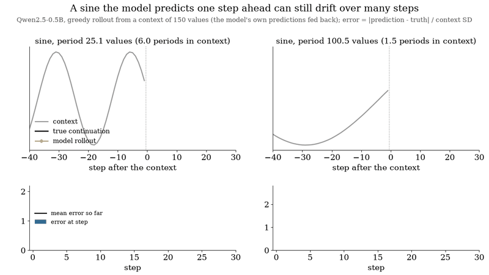

See how a model routes information, layer by layer.
An open-source Python library. It turns each layer's attention into a graph over the tokens and measures it: the Laplacian spectrum of every head, and the frequency content of the residual stream on those graphs, from one forward pass.
- Training-free
- Label-free
- One forward pass
- Works with TransformerLens, nnsight and Hugging Face
- Open source, Apache-2.0
$ pip install spectral-trustNumerical in-context learning
New in 0.5.3: tools for studying how language models continue number sequences, following Bao et al. (EACL 2027). Seeded generators for periodic, chaotic and smooth dynamics, a token-preserving shuffle with inventory covariates for confound audits, multi-step rollout, value-weighted and centred diagnostics, and sink_bias, which moves the attention sink during generation.
The figure shows why multi-step rollout matters. Qwen2.5-0.5B predicts each next value of a slow sine almost exactly, yet its own predictions drift away within a few dozen steps, while a faster sine with more periods in context stays on track. Use case · Colab

numeric.rollout). Lower panels: error per step.More graphs, and the measures others use
New in 0.5.1: value-weighted, directed and magnetic attention graphs, the measure-aware operator of Viganò, Melzi and Ovsjanikov (NeurIPS 2026) with its participation ratio, Forman curvature after Kim, Lutzeyer and Guo, pseudospectra of the triangular attention matrix, and sink and asymmetry features.
Any metric now plugs into LM-Polygraph as an uncertainty estimator. A numerical in-context learning toolkit adds serialisation, a confound audit and edits with matched controls (Colab). Every 0.5.0 call returns bit-identical results, pinned by a regression test.
from transformers import AutoModelForCausalLM, AutoTokenizer
from spectral_trust.operator_spectra import operator_metrics
from spectral_trust.forman import graph_curvature_summary
tok = AutoTokenizer.from_pretrained("gpt2")
model = AutoModelForCausalLM.from_pretrained("gpt2", attn_implementation="eager")
ids = tok("The cat sat on the mat because it was warm.", return_tensors="pt")
A = model(**ids, output_attentions=True).attentions[9][0] # layer 9, per head
m = operator_metrics(A, measure="pullback")
m["participation_ratio"].mean() # 0.165
graph_curvature_summary(A.mean(0), directed=True)[0] # mean Forman curvature, -7.39Interventions
New in 0.5.0: edits in the graph-spectral domain. Filter the residual stream along the token axis, in the frequency basis of the model's own attention graph, with low-pass, high-pass and band filters and a causal mode for generation. Patch one band of graph frequencies from a clean run into a corrupted one. Remove attention edges while the sink keeps its share.
Activation patching, head ablation, activation steering and custom hooks work on Hugging Face models too, and every edit is undone when the block exits.
import torch
import spectral_trust as st
model = st.SpectralModel.from_pretrained("gpt2")
text = ("When Mary and John went to the store, "
"John gave a drink to")
ids = model.tokenizer(text, return_tensors="pt").input_ids
S = ids.shape[1]
mask = torch.zeros(S, S, dtype=torch.bool)
mask[S - 1, [1, 3, 9]] = True # last token, the names
with st.intervene(model) as iv:
# smooth the residual stream along the attention graph
iv.resid(5).graph_filter("lowpass", cutoff=1.0,
strength=0.5, causal=True,
token_span=(1, None))
# remove edges, the sink keeps its share (this warns:
# those edges held most of the row)
iv.attention(9, 9).remove_edges(mask)
logits = model(ids).logits
# the model is unchanged here-
GPT-2 small · 200 IOI prompts
Edge ablation and the sink
−0.79 vs −0.12logit difference, sink kept vs plain renormalisation
Removing the name movers' edges to the names. Where the removed attention goes decides the conclusion.
-
GPT-2 small · IOI and WikiText-2
Graph-frequency steering
24 of 66live settings beyond both matched controls
Low-pass and high-pass filters along the attention graph, each against shuffled-graph and positional edits of the same size.
-
GPT-2 small · 200 IOI prompt pairs
Frequency-resolved patching
0.51of the logit difference from one band, against 0.18 for the 95th percentile of random bands
One band of graph frequencies patched from a clean run at block 10. Patching the final position alone recovers more.
-
GPT-2 small and Phi-3-mini · WikiText-2
Graph-filter side effects
≤ 0.3relative edit size that leaves generation clean
Full-strength high-pass and band-pass edits break the model, and the library now warns before they do.
-
Phi-3-mini and four other models
Which words split Phi-3's attention graph
0.93 → 0.37layer-3 Fiedler value after to, of, by, for and four more
A drop that looks like the passive voice comes from eight frequent prepositions. Attention-sink mass detects it as well.
-
Every result ships with its script and its controls
The release post tells the story, and the tutorial covers the API. Or run them in Colab: quickstart, animated views, interventions and Phi-3 (GPU runtime).
Animated views
New in 0.4.2: one call writes a video, a GIF or an interactive page of a cache, and the file suffix picks the format.
flow: each token is a tube through depth, placed by its spectral coordinates at each layer, coloured by its side of the Fiedler split and as thick as the attention it receives. The twelve injected tokens, outlined in vermillion, travel as their own strand.waterfall: the residual-stream energy of each graph-frequency mode, one ridge per layer, with the HFER band shaded orange.compare: a clean and an injected prompt, tokens matched. The eight injected tokens hold 48% of the edge weight at layer 0 and 33% at the last layer.cache.animate(kind, "out.mp4")The kinds are flow, embedding3d, waterfall, compare, graph_movie and head_atlas. .webm, .gif or .html in place of .mp4 writes a VP9 video, a GIF sized for phones or an interactive page. Video and GIF need the viz extra. The interactive flow plays the flight once, then can be orbited and hovered.
Quickstart
Load a Hugging Face model and run it once. The cache holds every measurement, keyed in the style of TransformerLens: one value per head under attn, the metrics that also read the hidden states under resid, and the head-averaged graph under graph.
It runs on a CPU. A list of texts runs as a batch, and the views render inline in Jupyter or save as standalone HTML.
import spectral_trust as st
model = st.SpectralModel.from_pretrained("Qwen/Qwen3-0.6B")
cache = model.run_with_spectra(
"The cat sat on the mat because it was warm.")
cache["blocks.10.graph.fiedler_value"] # 0.642
# every measurement of one head, and an interactive view
cache.layer(10).head(3)
cache.graph(10, head=3)Already using TransformerLens or nnsight?
Measure a run you already have, with no second forward pass. Patch, ablate or steer with those libraries, then measure the attention graphs here. st.from_hf_outputs does the same for a Hugging Face forward pass.
from transformer_lens.model_bridge import TransformerBridge
import spectral_trust as st
model = TransformerBridge.boot_transformers("gpt2")
tokens = model.to_tokens(
"The cat sat on the mat because it was warm.")
_, tl_cache = model.run_with_cache(tokens)
cache = st.from_transformer_lens(tl_cache, model, tokens)
# SpectralCache('gpt2', 12 tokens, layers 0-11, 12 heads,
# metrics: attn=5, resid=4, graph=10)from nnsight import LanguageModel
import spectral_trust as st
prompt = "The cat sat on the mat because it was warm."
lm = LanguageModel("gpt2", attn_implementation="eager",
dispatch=True)
attn, resid = [], []
with lm.trace(prompt):
for block in lm.transformer.h:
# attention weights, then the block output
attn.append(block.attn.output[1].save())
resid.append(block.output.save())
cache = st.from_nnsight(attn, resid, model=lm, tokens=prompt)Every layer at a glance
The same sentence through six of the 28 layers. The Fiedler value falls towards zero when the graph splits into groups that barely attend to each other.
Layer 0fiedler_value, all 28 layersLayer 27
Faster in 0.4.0
On the same job, 0.4.0 is 4.8× faster than 0.3.0 on its defaults, and 2.9× faster than 0.3.0 with its dense solver, so the gain is not only a change of default.
Hidden-state metrics for the 28 layers of Qwen3-0.6B on one prompt of 512 tokens, on the head-averaged graph of each layer and on the graph of each of its 16 heads. Medians of 3 runs, forward pass excluded, CPU only, 2 threads, torch 2.15.0. 0.4.0 also computes the per-head attention metrics in the same call.
Used in work by researchers at
Each logo links to the paper that uses the library.
Start with the documentation
Install, four tutorials, the use cases, the concepts and the full API reference. Version 0.5.3 is on PyPI, under the Apache 2.0 licence. It adds directed and value-weighted graphs, operator spectra, curvature and an LM-Polygraph bridge to the graph-spectral interventions of 0.5.0.